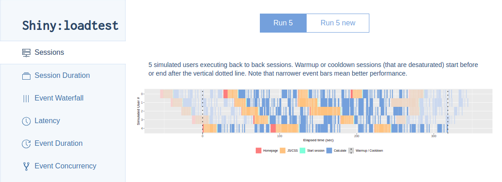

Shiny testing overview
Automated testing is essential for making sure that code works the way that you intend it to, and keeps working even after you make changes to the code.
Before Shiny 1.5.0, the shinytest package provided the main way of testing apps. Shinytest records a script of actions, takes snapshots of the application’s state, and uses those snapshots for comparison in future test runs.
Shiny 1.5.0 introduced the runTests() function, which can run shinytest snapshot-based tests, as well as other kinds of tests that don’t use snapshots. Broadly speaking, there are three categories of tests:
- Unit tests: These are used to test that functions behave as expected.
- Server function tests: These tests run the server function of a Shiny application in an environment that simulates a real client session. They can be used to test reactive components and outputs in the server function of a Shiny application, or in a module.
- Snapshot-based tests: These are tests performed with the shinytest package, which runs the Shiny application in a headless web browser. The web browser connects to the Shiny application and simulates user actions, such as clicking on buttons and setting inputs to particular values. It takes snapshots of the application state and, in future runs of the tests, compares the application state to those saved snapshots.
For unit tests and server function tests, no web browser is involved, and the tests and test expectations are expressed in R code. This means that the tests run quickly, and that changing code in one part of an application will generally not affect tests of another part of the application.
The snapshot-based tests require a headless web browser, and, as the name suggests, use snapshots. The recordTest() function makes it easy to record a test script by interacting with your application; running the test script replays your interactions with the application and takes snapshots of the application’s state. Each snapshot can also include a screenshot of the web browser. These snapshots are saved to disk as baseline, or expected, results. Later on, when you run the test script again, it compares the snapshots to the expected results from before. If they are identical, the test is considered successful; if not, then you will be prompted to view what changed in the snapshots, and you can either accept the new snapshots as the new expected results, or you can reject them.
Here are some practical differences between the various types of tests.
They differ in scope:
- Unit tests can be very narrowly focused, testing just a single function at a time.
- Server function tests involve creating a mock Shiny session, and involve running much or all of the reactive code in an application or module.
- Snapshot-based tests typically capture the state of the entire application, along with screenshots. This makes them very useful for testing the full user experience, but makes them very sensitive to any changes in the application, including any of it’s software dependencies (OS, R version, R package versions, etc).
The components that can be tested with each type of test:
- Unit tests are only useful for functions defined outside of the application’s server function.
- Server function tests can be used to test reactive expressions and output values (as in
output$x) from inside of an application’s (or module’s) server function. - Snapshot-based tests capture the state of inputs, outputs, and (optionally) additional information that the application author provides for the tests.
Creating tests:
- Unit and server function tests require writing the tests in code.
- Snapshot-based tests are easy to create, because you can simply interact with the application as normal, and it records those interactions. However, there are some types of interactions which cannot be recorded, and in some cases, the recorded test script will need manual tweaking.
Sensitivity to changes:
- Unit tests usually target a specific function, so changes to unrelated components will not affect the test results.
- Server function tests require executing code for the entire server function. In most cases, individual tests will still be able to focus on specific components of the application.
- Snapshot-based tests capture much more application state and typically also record screenshots, they can detect and alert you to many changes to the application, even ones that you don’t expect. The advantage to this is that it can detect changes to things you did not think craft specific tests for. The drawback is that many changes can result in spurious changes, which will require you to review the changes and confirm that they are as expected. (The
viewTestDiff()function makes it easier to review changes using a graphical interface.)
In this article, we’ll demonstrate these three approaches to testing with a basic Shiny application. As you’ll see throughout, any of these tests can be run locally via shiny::runTest() (see the continuous integration section to run them on a remote machine). Finally, these testing strategies are primarily focused on testing the correctness of an application, but they don’t tell you anything about its performance under load. Shiny load testing is most easily done via the shinyloadtest package (see the Load testing section).
Note: If you used shinytest before version 1.4.0, it put its tests in your application’s tests/ subdirectory. As of shinytest 1.4.0, they go in tests/shinytest/, because shiny 1.5.0 puts all kinds tests in tests/. The function shinytest::migrateShinytestDir() will migrate your tests to the new location and set it up to be used with shiny::runTests().
Creating an example
You can create a basic application with the shinyAppTemplate() function. This application will contain a module and various kinds of tests. To create an application in a directory called myapp:
shinyAppTemplate("myapp")It will ask you what components you want to use:
Select which of the following to add at myapp/ :
1: All
2: app.R : Main application file
3: R/example.R : Helper file with R code
4: R/example-module.R : Example module
5: tests/shinytest/ : Tests using the shinytest package
6: tests/testthat/ : Tests using the testthat package
Enter one or more numbers (with spaces), or an empty line to exit:Select 1 to add all of these components, and press Enter. This will create a directory myapp with a Shiny application, a subdirectory R/ which contains a function that containing the following:
myapp/
|- app.R
|- R
| |- example-module.R
| `- example.R
`- tests
|- shinytest.R
|- shinytest
| `- mytest.R
|- testthat.R
`- testthat
|- test-examplemodule.R
|- test-server.R
`- test-sort.RThe R/ subdirectory contains code that is used in the application. example.R contains a function, lexical_sort, which can be unit-tested. example-module.R contains a module with two parts, exampleModuleUI and exampleModuleServer. The server part of the module can be tested using the server testing framework.
When the runTests() function is called, it looks in the application’s tests/ directory and sources the .R files it finds there. The output looks like this:
> shiny::runTests("myapp")
Running mytest.R
==== Comparing mytest...
No existing snapshots at mytest-expected/. This is a first run of tests.
Updating baseline results at ..//tests/shinytest/mytest-expected...
Renaming shinytest/mytest-current
=> ..//tests/shinytest/mytest-expected.
✓ | OK F W S | Context
✓ | 2 | sort
══ Results ════════════════════════════════════════════════════════════════
Duration: 0.3 s
OK: 8
Failed: 0
Warnings: 0
Skipped: 0
Shiny App Test Results
* Success
- myapp/tests/shinytest.R
- myapp/tests/testthat.RCode tests with testthat
In the application created by shinyAppTemplate(), the file tests/testthat.R is the test runner for code tests. It runs all the .R files in the tests/testthat/ subdirectory. It contains the following:
library(testthat)
test_dir(
"./testthat",
env = shiny::loadSupport(),
reporter = c("progress", "fail")
)Notably, when it calls the test_dir() function, it specifies a special value for env, which is the R environment in which to run the test scripts. This is done by calling shiny::loadSupport(), which sources the files in the R/ subdirectory in a new environment (which is a child of the global environment), so that any functions or other R objects from those scripts will be created in that environment. If global.R is present, it will also be sourced into R’s global environment (it uses the global environment for legacy reasons).
All of the code tests are contained with the directory tests/testthat/, so to run just the code tests, you can call:
runTests("myapp", filter = "testthat")If you just call runTests("myapp"), it will run the all tests, which include the code tests and snapshot-based tests.
Note: The code tests in this document use the testthat package. However, you don’t have to use testthat. You could use a different testing system if you prefer.
Unit tests
In a Shiny application, unit tests can be used to test functions contained in the R/ directory. In our example, the file R/example.R contains a function named lexical_sort().
Our application includes a test in testthat/test-sort.R, with the following:
test_that("Lexical sorting works", {
expect_equal(lexical_sort(c(1, 2, 3)), c(1, 2, 3))
expect_equal(lexical_sort(c(1, 2, 3, 13, 11, 21)), c(1, 11, 13, 2, 21, 3))
})These tests ensure that lexical_sort() does what it claims to do: sort a vector lexically, intead of numerically, so that, for example, 11 and 13 come before 2. This kind of tests not only ensures that function does the right thing; it also ensures that it continues to do so in the future, even changes are made to it.
For more information on using testthat, see https://testthat.r-lib.org/.
Server code tests
Shiny 1.5.0 also adds the ability to test code inside an application’s server function or a module’s server function. For a more in-depth exploration of this, see the Server function testing article.
Here’s a portion of the application server function, from app.R:
server <- function(input, output, session) {
data <- reactive({
lexical_sort(seq_len(input$size))
})
output$sequence <- renderText({
paste(data(), collapse = " ")
})
}Here are some server function tests, from tests/testthat/test-server.R:
testServer(expr = {
session$setInputs(size = 6)
expect_equal(output$sequence, "1 2 3 4 5 6")
session$setInputs(size = 12)
expect_equal(output$sequence, "1 10 11 12 2 3 4 5 6 7 8 9")
})Notice that testServer() is called and given an expression. When invoked via runTests(), it automatically has access to the contents of the application’s server function. It works by executing the server function, and then making all of the objects from the server function available when it evaluates the test expression.
The first step inside of the test expression is to set input values. Normally, when an application is run the starting values of the inputs come from the web browser, which in turn gets the starting input values from the application’s UI definition. However, when testServer() is used, the UI isn’t available, so for the tests, the inputs don’t have any starting values, and so must be set explicitly with session$setInputs(). In the example, it sets size, but if you have multiple inputs you’d like to set, they can also be passed in, as in session$setInputs(x=1, y=2).
Each time that setInputs is called, a reactive flush happens at the end. This is what causes reactive expressions, observers, and outputs to run. (A flush can also be triggered explicitly with session$flush().)
Inside of the test expression, output values and reactive expressions can be accessed. In the example above, it checks that the value output$sequence matches an expected value.
The reactive expression data() can also be tested. For example, the following test checks the value of data():
expect_equal(data(), 1:6)Snapshot-based tests
The snapshot approach to testing differs significantly from the code tests above. In the code tests, the expectations for the tests are expressed in code, and written by hand. In the snapshot-based tests, the test expectations are recorded from the state of the application. The snapshots are used to detect changes to the application’s behavior. For Shiny, the shinytest package is used to create snapshot-based tests.
Because the snapshots typically capture a large amount of the application’s state as well as a screenshot, they are very sensitive to changes. This is helpful for detecting unexpected changes in behavior, but it can also result in false positives – any change to the application’s behavior causes a test failure which then requires a person to view and potentially approve the changes. Because these changes can happen easily, viewTestDiff() provides a graphical interface for easily visualizing the changes and either accepting them or rejecting them.
Here is a brief overview of how testing works with shinytest:
- Get your Shiny application to a state that looks good.
- Create a test recording:
- Call shinytests’s
recordTest()function. This will open a web browser with your application running in an iframe, and a set of shinytest controls on the side. - Interact with your application as normal. These interactions will be recorded to a test script. Along the way, click the Take snapshot button to tell the test script to record snapshots of the application’s state.
- Once you finish the recording, it will play back the test script using a headless web browser and take snapshots where specified. These snapshots will be stored as the expected results.
- Call shinytests’s
- When you run the test script again in the future, it will take new snapshots. If new the snapshots are the same as the expected (old) ones, then the test passes. If the new snapshots differ from the expected ones, then you will be prompted with a web interface whether to accept the new snapshots (and use them in the future as the expected snapshots), or to reject them.
For more information about using shinytest, see the shinytest web site.
Automated testing with continuous integration
You can use continuous integration (CI) for testing your Shiny application – that is, automatically run tests each time any changes are committed. You can also run the tests on a schedule, for example, once per day or week. This can be useful for detecting if any changes to the packages used by your application cause changes in behavior.
Using CI is relatively simple for unit and server function tests, but is more difficult for snapshot-based testing, since any software differences (e.g., the operating system, R version, package versions, etc) can lead to snapshot differences.
We recommend using GitHub Actions (GHA) for CI and have several templates to help you get started:
Load testing
All the testing we’ve discussed thus far relate to validating the correctness of the app. If you anticipate a lot of traffic or if you deem that downtime is very expensive for this app, you may wish to validate that the application will be able to handle the anticipated “load” before you deploy a new version.
Thankfully, shinyloadtest makes it easy to evaluate the performance of a Shiny app and even identify bottlenecks. Much like shinytest, the first step is to record a session that represents how a user might interact with your application. Once you have this recorded session, you can replay this session in parallel, simulating many dozens, hundreds, or thousands of concurrent users on your application to confirm that it continues to behave within acceptable ranges.

Again, because shinyloadtest involves interactively recording a session, you’re best served by reading through the shinyloadtest website to learn how to leverage shinyloadtest with your application.